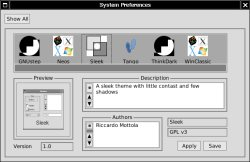
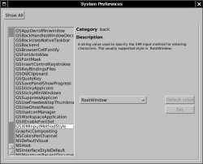

System Preferences
System Preferences
Contents
[ Introduction | Panes | Documentation | Download System Preferences | Maintainer | Related links ]
Introduction
System Preferences is an application which allows to manage the settings of many aspects of the gnustep environment and its applications.
System Preferences are made of Modules, each one a bundle representing a single control panel, and is thus extensible and modular.
Technically, it is a clone of the Apple OS X System Preferences and offers a compatible framework.
The main window:

Panes
System Preferences comes with seven default preference modules:
Themes, Date & Time, File System, Modifier Keys, Fonts, Defaults and Volumes.
The Color Schemes module is still supplied but not installed by default anymore since its functionality is superseded by the Themes panel.
Other applications, like GWorkspace, may install additional panels
Themes: 

The Themes panel lets you switch easily between the different installed themes. The changes are system-wide for all applications.
Defaults 

The Defaults panel lets you customize GNUstep in many ways, by tweaking even some obscure options. It is an alternative to fiddle in the console with the defaults in the NSGlobalDomain. Some settings may be complicated, but it is much easier than opening the console!
Documentation
The PreferencePanes framework Reference is here.
For installation help, please refer to the INSTALL file included in the System Preferences package.
Download System Preferences
The latest version of System Preferences can be downloaded here: 1.1.0.
Access to SVN repository by:
svn co http://svn.gna.org/svn/gnustep/apps/systempreferences/trunk
Maintainer
The original System Preferences and the PreferencePanes framework was written by Enrico Sersale.The application is now maintained by the GNUstep community, among them Riccardo Mottola who added the Themes module.